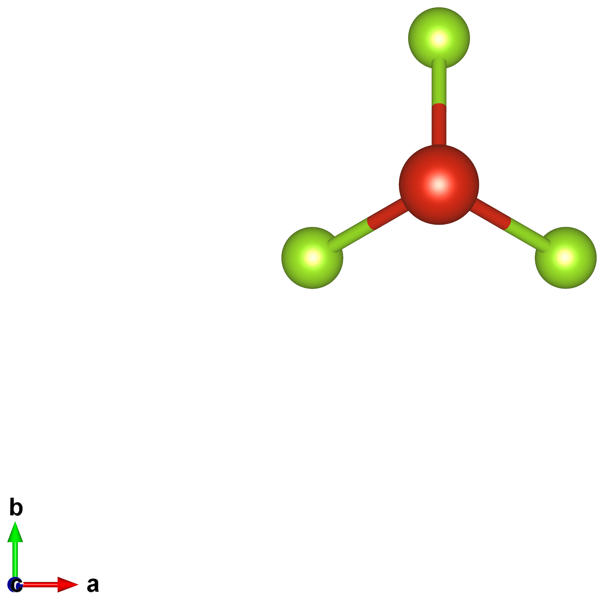
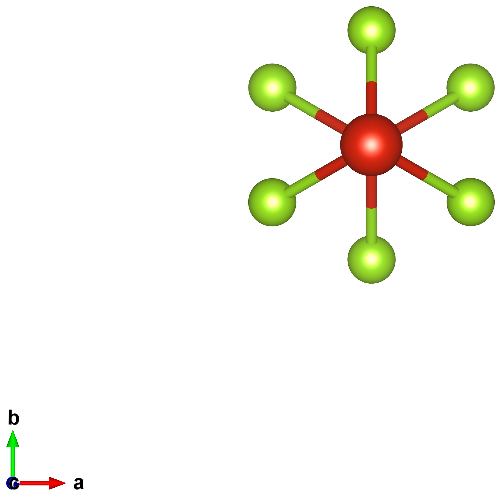
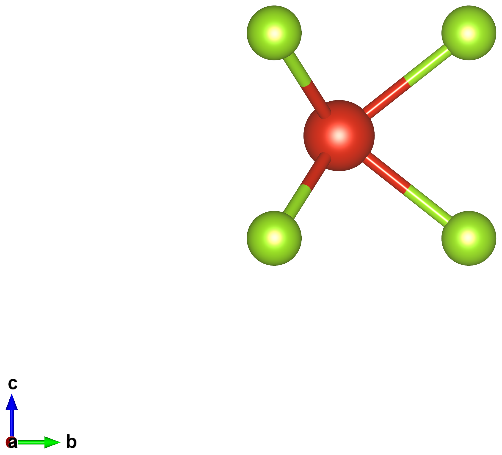
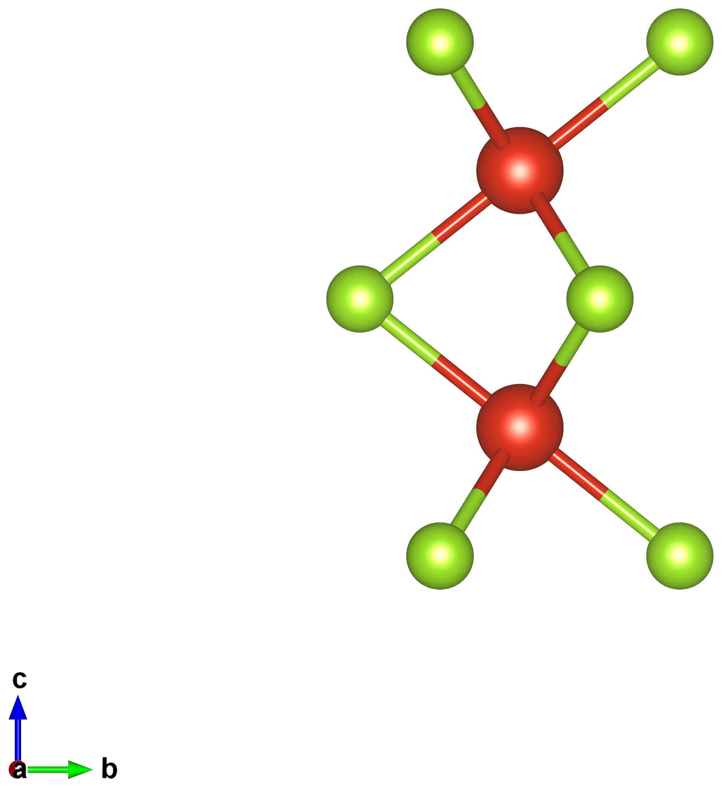
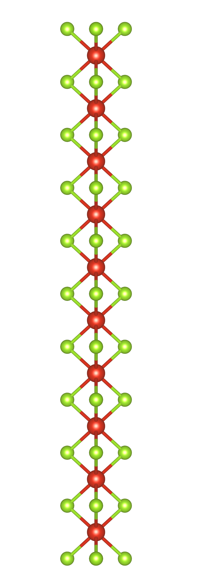
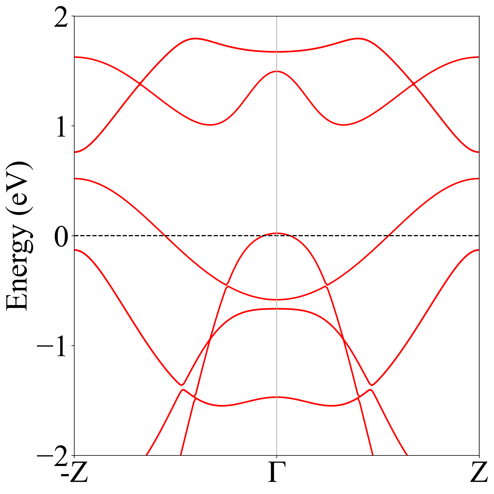

01. VSe₃ TP vs TAP stability
Goal
Determine which 1D chain coordination — TP (trigonal prismatic) or TAP (trigonal anti-prismatic) — is more stable for VSe₃, supporting the experimental (STEM) claim that the CNT-confined VSe₃ single chain is TP. The two differ by a 60° rotation between adjacent Se₃ triangles along the chain axis: in TP the triangles are aligned (top view shows 3 Se), in TAP adjacent triangles are rotated 60° (top view shows a 6-pointed star).
Method
Initial structures were built from literature parameters with build_vse3.py:
TP from dVSe = 2.45 Å, dVV = 3.09 Å (covalent-radii sum, Cordero 2008 +
NbSe₃ scaling, Hodeau 1978); TAP is the same with a 60° rotation (c = 6.18 Å, 8 atoms).
Both were relaxed in SIESTA. TP/TAP stability was then compared with two functionals,
vdW-DF2 (LMKLL) and PBE+D2. Within a single functional the total-energy difference is a valid
comparison; across functionals it is not (see
stability methodology).
Result
TP is more stable than TAP by 0.163 eV per formula unit (vdW-DF2 bulk relax, robust to k-mesh; ≈ 41 meV/atom). The TP band structure is metallic.
| Polytype | E / formula (eV) | V–V (Å) | cell c (Å) |
|---|---|---|---|
| TP (prismatic) | −11957.142 | 3.116 | 3.116 |
| TAP (antiprismatic) | −11956.979 | 2.766 | 5.531 |
| ΔE (TP − TAP) | −0.163 | — | — |
TP keeps its upper/lower Se triangles aligned (3 Se overlap in top view); TAP is the 60°-rotated (octahedral) stacking, metallic in both functionals. (Source: 2026-06-12 meeting.)




Interactive — relaxed chains (drag to rotate, scroll to zoom): TP (left), TAP (right):


Discussion
The TAP relaxed structure was delivered to the experimental team (Dr. Yangjin Lee) for STEM image simulation (2026-04-16). Its vdW-DF2 relaxed local parameters: c = 5.535 Å, V–Se = 2.508 Å, V–V = 2.768 Å. A planned extension is a Se-vs-Te (VSe₃ vs VTe₃) TP/TAP comparison; VTe₃ TP/TAP initial structures were built (cases 03/04) but those relaxations are listed as 2nd priority and not reported here.